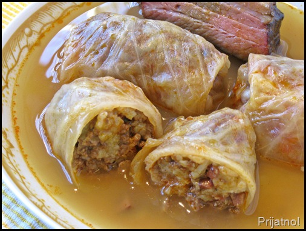

Sarma

Description
Serbian stuffed cabbage, or sarma, is a hearty dish that many Serbs serve
every day but especially for special occasions like slavas and other holidays.
Recipes vary from cook to cook, but they all consist of a meat filling
wrapped in cabbage and cooked over sauerkraut.
Ingredients
- 1 (3-to 4-pound) head cabbage
- 1 pound ground chuck
- 1/2 pound ground pork
- 1 cup raw rice, rinsed
- 1 (1.4-ounce) package dehydrated onion soup mix
- 1 (32-ounce) jar sauerkraut, rinsed and drained
- 6 medium smoked ribs, ham hocks, or other smoked meat
Steps
- Gather the ingredients.
- Cut the core out of the cabbage and discard.
- In a large pot partially filled with boiling water, steam the cabbage,
cut-side down. Reduce the heat to medium, cover and steam until
the outer leaves are limp, about 8 to 10 minutes.
- Use tongs to remove
the larger softened leaves. Continue to steam and remove larger leaves
as they become done until you have about 22 to 23 whole large cabbage
leaves.
- With a paring knife, remove the tough ribs without damaging the leaves.
Discard the cabbage ribs or reserve for another use.
- In a large bowl, mix together the ground chuck, ground pork, rice,
and onion soup mix.
- Add a small amount of water to make the mixture easier to handle.
- Set 3 or 4 of the leaves aside. Heap about 1/4 cup of filling onto
each of the remaining cabbage leaves.
- Fold the bottom of the cabbage leaf up over the meat.
- Fold sides to the center and roll away from yourself to completely
encase the meat.
- Repeat until all the meat filling is used.
- Position a rack in the center of the oven and heat to 350 F.
- Coarsely chop the remaining steamed cabbage, not including the reserved
leaves.
- Spread the chopped cabbage on the bottom of a large casserole dish or Dutch
oven. Add the drained sauerkraut.
- Layer on the cabbage rolls, seam-side down.
- Cut the smoked ribs into pieces. Space the ribs or other smoked meat of choice
between the cabbage rolls.
- Cover rolls with reserved whole cabbage leaves.
- Cover the casserole dish and bake 1 hour.
- Reduce temperature to 325 F and bake for 2 more hours.
- Let sit 20 to 30 minutes before serving.
- Serve with the ribs.